1 Ιδιότητες παράλληλων ευθειών
Να ξαναδείτε τα αντίστοιχα μαθήματα Γυμνασίου
1.1 ΜΕΡΟΣ 1: ΙΔΙΟΤΗΤΕΣ ΠΑΡΑΛΛΗΛΩΝ ΕΥΘΕΙΩΝ
Α. Προτάσεις (Θεωρήματα) και Πορίσματα
Πρόταση I (Εντός εναλλάξ γωνίες):
Αν δύο παράλληλες ευθείες τέμνονται από μια τρίτη ευθεία (τέμνουσα), τότε σχηματίζουν τις εντός εναλλάξ γωνίες ίσες.
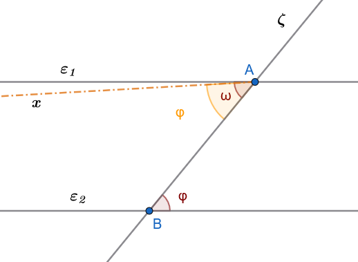
Απόδειξη (Με απαγωγή σε άτοπο):
Έστω οι παράλληλες ευθείες \(\epsilon_1 \parallel \epsilon_2\) και η τέμνουσα \(\zeta\) που τις τέμνει στα σημεία \(A\) και \(B\) αντίστοιχα.
Θα αποδείξουμε ότι οι εντός εναλλάξ γωνίες \(\widehat{\omega}\) και \(\widehat{\phi}\) είναι ίσες.
Αν υποθέσουμε ότι \(\widehat{\omega} \neq \widehat{\phi}\), τότε από το σημείο \(A\) φέρουμε μια ημιευθεία \(Ax\) τέτοια ώστε η γωνία \(\widehat{xAB}\) να είναι ίση με τη \(\widehat{\phi}\) και να βρίσκεται εκατέρωθεν της \(\zeta\).
Τότε, επειδή οι γωνίες \(\widehat{xAB}\) και \(\widehat{\phi}\) είναι εντός εναλλάξ και ίσες, η ευθεία \(Ax\) θα είναι παράλληλη προς την \(\epsilon_2\).
Αυτό όμως σημαίνει ότι από το σημείο \(A\) διέρχονται δύο διαφορετικές παράλληλες προς την \(\epsilon_2\) (η αρχική \(\epsilon_1\) και η \(Ax\)), πράγμα που αντιβαίνει στο Ευκλείδειο Αίτημα.
Συνεπώς, η υπόθεσή μας είναι άτοπη, άρα \(\widehat{\omega} = \widehat{\phi}\).
Πορισμα I (Εντός εκτός και επί τα αυτά):
Αν δύο παράλληλες ευθείες τέμνονται από τρίτη, σχηματίζουν τις εντός εκτός και επί τα αυτά μέρη γωνίες (αντίστοιχες) ίσες.
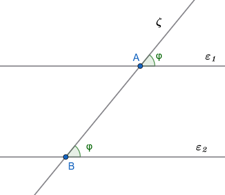
Πόρισμα II (Εντός και επί τα αυτά):
Αν δύο παράλληλες ευθείες τέμνονται από τρίτη, σχηματίζουν τις εντός και επί τα αυτά μέρη γωνίες παραπληρωματικές.
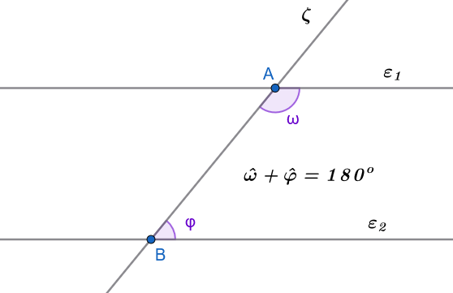
Πρόταση II
Αν δυο ευθείες \(ε_1\) και \(ε_2\) είναι παράλληλες και μία τρίτη ευθεία ζ τέμνει τη μία από αυτές, τότε η ζ θα τέμνει και την άλλη.
Απόδειξη
Υποθέτουμε ότι η ε τέμνει την \(ε_1\) στο Α. Αν η ζ δεν έτεμνε την \(ε_2\), θα ήταν \(ζ//ε_2\) και έτσι θα είχαμε από το Α δύο παράλληλες προς την \(ε_2\), πράγμα αδύνατο. Άρα η ζ τέμνει την \(ε_2\).
Πόρισμα I (Καθετότητα και Παραλληλία):
Αν μια ευθεία είναι κάθετη σε μία από δύο παράλληλες ευθείες, τότε είναι υποχρεωτικά κάθετη και στην άλλη.
Πρόταση II (Μεταβατική ιδιότητα):
Αν δύο διαφορετικές ευθείες \(\epsilon_1\) και \(\epsilon_2\) είναι παράλληλες προς μια τρίτη ευθεία \(\epsilon_3\), τότε είναι και μεταξύ τους παράλληλες (\(\epsilon_1 \parallel \epsilon_2\)).
Αόδειξη
Αν οι \(ε_1\) και \(ε_2\) τέμνονταν σε σημείο Α, θα είχαμε από το Α δύο παράλληλες προς την ε, που είναι άτοπο. Άρα \(ε_1//ε_2\).
Πρόταση ΙΙΙ
Αν δυο ευθείες τεμνόμενες από τρίτη σχηματίζουν τις εντός και επί τα αυτά μέρη γωνίες με άθροισμα μικρότερο από 2 ορθές, τότε οι ευθείες τέμνονται προς το μέρος της τέμνουσας που βρίσκονται οι γωνίες.
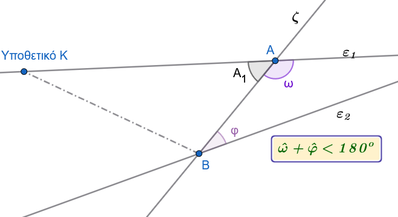
Απόδειξη
Έστω ότι η ζ τέμνει τις \(ε_1 ,ε_2\) στα Α και Β αντίστοιχα και ότι \(φ + ω ≠ 2∟\).
Τότε οι \(ε_1\) και \(ε_2\) δεν είναι παράλληλες, αφού \(φ + ω ≠ 2∟\) .
Έστω ότι οι \(ε_1\) και \(ε_2\) τέμνονται σε σημείο Κ, προς το μέρος της τέμνουσας, που δεν περιέχει τις γωνίες ω και φ.
Τότε, όμως, η εξωτερική γωνία ω του τριγώνου ΑΚΒ είναι μεγαλύτερη από τη γωνία \(A_1\) δηλαδή \(ω > A_1= 2∟- φ\) ή \(ω + φ > 2∟\), που είναι άτοπο.
Άρα οι \(ε_1,ε_2\) τέμνονται προς το μέρος της τέμνουσας που βρίσκονται οι γωνίες ω και φ.
Β. Εφαρμογές - Παραδείγματα
Εφαρμογή 1
Δίνεται ισοσκελές τρίγωνο \(AB\Gamma\) (\(AB=A\Gamma\)) και ευθεία \(\epsilon\) παράλληλη προς τη βάση του \(B\Gamma\), η οποία τέμνει τις πλευρές \(AB\) και \(A\Gamma\) στα σημεία \(\Delta\) και \(E\) αντίστοιχα. Να αποδείξετε ότι το τρίγωνο \(A\Delta E\) είναι ισοσκελές.
Λύση:
Επειδή το τρίγωνο \(AB\Gamma\) είναι ισοσκελές με \(AB = A\Gamma\), οι προσκείμενες στη βάση γωνίες του είναι ίσες, δηλαδή: \[\widehat{B} = \widehat{\Gamma}\]
Η ευθεία \(\epsilon\) είναι παράλληλη προς τη \(B\Gamma\) (\(\Delta E \parallel B\Gamma\)), οπότε τέμνεται από τις πλευρές \(AB\) και \(A\Gamma\).
Λόγω της παραλληλίας, οι εντός εκτός και επί τα αυτά γωνίες είναι ίσες: \[\widehat{A\Delta E} = \widehat{B} \quad \text{και} \quad \widehat{AE\Delta} = \widehat{\Gamma}\]
Από τις παραπάνω σχέσεις προκύπτει άμεσα ότι: \[\widehat{A\Delta E} = \widehat{AE\Delta}\]
Το τρίγωνο \(A\Delta E\) έχει δύο γωνίες του ίσες, επομένως είναι ισοσκελές με \(A\Delta = AE\).
Εφαρμογή 2
Από το έγκεντρο \(I\) (σημείο τομής των εσωτερικών διχοτόμων) τριγώνου \(AB\Gamma\), φέρουμε παράλληλες ευθείες \(I\Delta \parallel AB\) και \(IE \parallel A\Gamma\), οι οποίες τέμνουν τη βάση \(B\Gamma\) στα σημεία \(\Delta\) και \(E\) αντίστοιχα. Να αποδειχθεί ότι η περίμετρος του τριγώνου \(\Delta IE\) ισούται με το μήκος της πλευράς \(B\Gamma\).
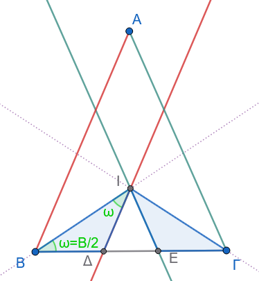
Λύση:
Η ημιευθεία \(BI\) είναι η διχοτόμος της γωνίας \(\widehat{B}\) του τριγώνου, άρα: \[\widehat{IB\Delta} = \widehat{IB\Gamma}\]
Εφόσον \(I\Delta \parallel AB\), η \(BI\) είναι τέμνουσα των παραλλήλων αυτών, οπότε οι εντός εναλλάξ γωνίες \(\widehat{BI\Delta}\) και \(\widehat{IB\Gamma}\) είναι ίσες: \[\widehat{BI\Delta} = \widehat{IB\Gamma}\]
Συνεπώς, στο τρίγωνο \(\Delta BI\) ισχύει \(\widehat{IB\Delta} = \widehat{BI\Delta}\), άρα είναι ισοσκελές με: \[\Delta I = B\Delta\]
Με τον ίδιο ακριβώς τρόπο, η ημιευθεία \(\Gamma I\) είναι η διχοτόμος της γωνίας \(\widehat{\Gamma}\) του τριγώνου, άρα: \[\widehat{I\Gamma E} = \widehat{I\Gamma B}\]
Εφόσον \(IE \parallel A\Gamma\), η \(\Gamma I\) τέμνει τις παράλληλες, οπότε οι εντός εναλλάξ γωνίες \(\widehat{\Gamma IE}\) και \(\widehat{I\Gamma B}\) είναι ίσες: \[\widehat{\Gamma IE} = \widehat{I\Gamma B}\]
Συνεπώς, το τρίγωνο \(E\Gamma I\) είναι ισοσκελές με: \[IE = \Gamma E\]
Η περίμετρος \(\Pi\) του τριγώνου \(\Delta IE\) είναι: \[\Pi = \Delta I + IE + \Delta E = B\Delta + \Gamma E + \Delta E = B\Gamma\]
Άρα, η περίμετρος του τριγώνου \(\Delta IE\) ισούται με τη βάση \(B\Gamma\).
Γ. Ασκήσεις προς Επίλυση
Σχεδιάστε σχήμα όπου απαιτείται
Άσκηση 1
Εκφώνηση: Δίνεται γωνία \(\widehat{xOy}\) και σημείο \(A\) της διχοτόμου της. Αν η παράλληλη ευθεία από το \(A\) προς την πλευρά \(Ox\) τέμνει την πλευρά \(Oy\) στο σημείο \(B\), να αποδείξετε ότι το τρίγωνο \(OAB\) είναι ισοσκελές.
Απόδειξη:
Έστω \(Oz\) η διχοτόμος της γωνίας \(\widehat{xOy}\), οπότε για το σημείο \(A \in Oz\) ισχύει: \[\widehat{xOA} = \widehat{AOB}\]
Η ευθεία \(AB\) είναι παράλληλη προς την \(Ox\) (\(AB \parallel Ox\)) και τέμνεται από τη διχοτόμο \(Oz\) (δηλαδή την ευθεία \(OA\)). Οι εντός εναλλάξ γωνίες \(\widehat{xOA}\) και \(\widehat{OAB}\) είναι ίσες λόγω της παραλληλίας: \[\widehat{OAB} = \widehat{xOA}\]
Συνδυάζοντας τις δύο ισότητες, έχουμε: \[\widehat{OAB} = \widehat{AOB}\]
Εφόσον στο τρίγωνο \(OAB\) δύο γωνίες είναι ίσες, το τρίγωνο είναι ισοσκελές με \(AB = OB\).
Άσκηση 2
Εκφώνηση: Στις προεκτάσεις των πλευρών \(BA\) και \(\Gamma A\) ενός τριγώνου \(AB\Gamma\) παίρνουμε αντίστοιχα τα τμήματα \(A\Delta = AB\) και \(AE = A\Gamma\). Να αποδείξετε ότι η ευθεία \(\Delta E\) είναι παράλληλη προς τη \(B\Gamma\).
Απόδειξη:
Συγκρίνουμε τα τρίγωνα \(AB\Gamma\) και \(A\Delta E\):
- \(AB = A\Delta\) (από κατασκευή).
- \(A\Gamma = AE\) (από κατασκευή).
- \(\widehat{BA\Gamma} = \widehat{\Delta AE}\) ως κατακορυφήν γωνίες.
Τα δύο τρίγωνα είναι ίσες από το 1ο Κριτήριο Ισότητας (ΠΓΠ). Από την ισότητα των τριγώνων προκύπτει ότι οι αντίστοιχες γωνίες τους είναι ίσες, δηλαδή: \[\widehat{A\Delta E} = \widehat{B}\]
Επειδή οι γωνίες \(\widehat{A\Delta E}\) και \(\widehat{B}\) είναι εντός εναλλάξ ως προς τις ευθείες \(\Delta E\) και \(B\Gamma\) με τέμνουσα τη \(B\Delta\), συμπεραίνουμε ότι οι ευθείες είναι παράλληλες: \[\Delta E \parallel B\Gamma \quad\]
Άσκηση 3
Εκφώνηση: Δίνεται ισοσκελές τρίγωνο \(AB\Gamma\) (\(AB = A\Gamma\)) και σημείο \(\Delta\) της πλευράς \(AB\). Αν ο κύκλος \((\Delta, \Delta B)\) τέμνει τη βάση \(B\Gamma\) στο σημείο \(E\), να αποδείξετε ότι \(\Delta E \parallel A\Gamma\).
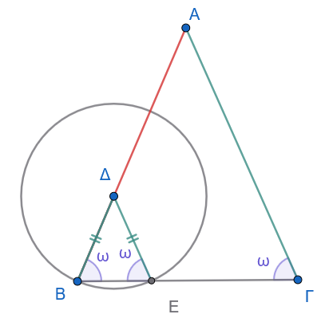
Απόδειξη:
Ο κύκλος έχει κέντρο το \(\Delta\) και διέρχεται από το \(B\) και το \(E\), άρα τα ευθύγραμμα τμήματα \(\Delta B\) και \(\Delta E\) είναι ακτίνες του κύκλου, οπότε: \[\Delta B = \Delta E\]
Συνεπώς, το τρίγωνο \(\Delta BE\) είναι ισοσκελές, άρα οι προσκείμενες στη βάση γωνίες του είναι ίσες: \[\widehat{B} = \widehat{\Delta EB}\]
Εφόσον το αρχικό τρίγωνο \(AB\Gamma\) είναι ισοσκελές με \(AB = A\Gamma\), ισχύει επίσης η ισότητα των γωνιών της βάσης: \[\widehat{B} = \widehat{\Gamma}\]
Από τις δύο ισότητες προκύπτει άμεσα ότι: \[\widehat{\Delta EB} = \widehat{\Gamma}\]
Οι γωνίες \(\widehat{\Delta EB}\) και \(\widehat{\Gamma}\) είναι εντός εκτός και επί τα αυτά γωνίες ως προς τις ευθείες \(\Delta E\) και \(A\Gamma\) με τέμνουσα τη \(B\Gamma\).
Επειδή είναι ίσες, οι ευθείες είναι παράλληλες, δηλαδή: \[\Delta E \parallel A\Gamma \quad\]
Άσκηση 4
Εκφώνηση: Δίνεται κύκλος \((O, \rho)\) και \(M\) το μέσο μιας χορδής του \(AB\). Φέρουμε τη διάμετρο \(Ox\) τέτοια ώστε \(Ox \perp OM\). Να αποδείξετε ότι \(Ox \parallel AB\).
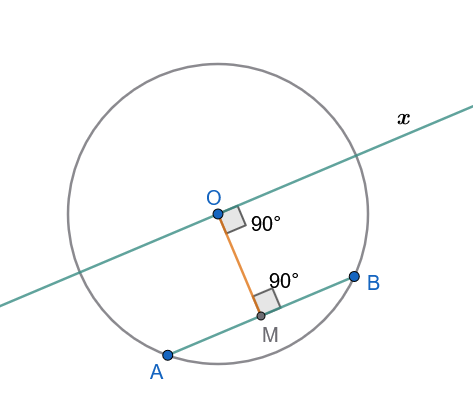
Απόδειξη:
Εφόσον το \(M\) είναι το μέσο της χορδής \(AB\) του κύκλου, το ευθύγραμμο τμήμα \(OM\) είναι το απόστημα της χορδής \(AB\).
Σύμφωνα με το γεωμετρικό θεώρημα, η ευθεία που συνδέει το κέντρο με το μέσο μιας χορδής είναι κάθετη σε αυτήν: \[OM \perp AB\]
Από την υπόθεση της άσκησης, η ευθεία \(Ox\) έχει κατασκευαστεί κάθετη στο \(OM\): \[Ox \perp OM \quad\]
Εφόσον οι ευθείες \(AB\) και \(Ox\) είναι και οι δύο κάθετες στην ευθεία \(OM\), σύμφωνα με το θεώρημα της καθετότητας και παραλληλίας, είναι παράλληλες μεταξύ τους: \[Ox \parallel AB \quad\]
Άσκηση 5
Εκφώνηση: Δίνεται τρίγωνο \(AB\Gamma\) και η διχοτόμος του \(A\Delta\). Από την κορυφή \(B\) φέρουμε ευθεία \(BE \parallel A\Delta\) η οποία τέμνει την προέκταση της πλευράς \(\Gamma A\) στο σημείο \(E\). Να αποδείξετε ότι \(E\Gamma = AB + A\Gamma\).
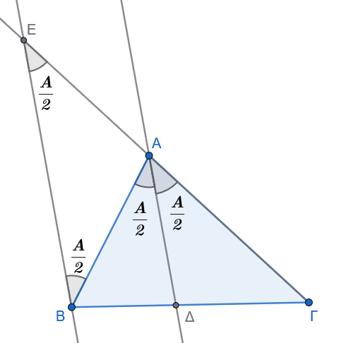
Απόδειξη:
Εφόσον η \(A\Delta\) είναι διχοτόμος της γωνίας \(\widehat{A}\), ισχύει: \[\widehat{BA\Delta} = \widehat{\Delta A\Gamma} = \frac{\widehat{A}}{2}\]
Οι ευθείες \(BE\) και \(A\Delta\) είναι παράλληλες (\(BE \parallel A\Delta\)) και τέμνονται από τις ευθείες \(E\Gamma\) και \(AB\).
- Οι γωνίες \(\widehat{AEB}\) και \(\widehat{\Delta A\Gamma}\) είναι ίσες ως εντός εκτός και επί τα αυτά: \[\widehat{AEB} = \widehat{\Delta A\Gamma}\]
- Οι γωνίες \(\widehat{ABE}\) και \(\widehat{BA\Delta}\) είναι ίσες ως εντός εναλλάξ: \[\widehat{ABE} = \widehat{BA\Delta}\]
Λόγω της διχοτόμου, προκύπτει ότι: \[\widehat{AEB} = \widehat{ABE}\]
Συνεπώς, το τρίγωνο \(AEB\) είναι ισοσκελές με \(AE = AB\).
Για το συνολικό ευθύγραμμο τμήμα \(E\Gamma\), επειδή το σημείο \(A\) βρίσκεται μεταξύ των \(E\) και \(\Gamma\), έχουμε: \[E\Gamma = AE + A\Gamma\]
Αντικαθιστώντας τη σχέση \(AE = AB\), προκύπτει άμεσα το ζητούμενο: \[E\Gamma = AB + A\Gamma \quad\]
1.2 ΜΕΡΟΣ 2: ΚΑΤΑΣΚΕΥΗ ΠΑΡΑΛΛΗΛΗΣ ΕΥΘΕΙΑΣ
Α. Εφαρμογές (Λυμένα Παραδείγματα)
Εφαρμογή 1
Να περιγραφεί αναλυτικά η γεωμετρική κατασκευή παράλληλης ευθείας \(\epsilon'\) προς ευθεία \(\epsilon\) από σημείο \(A \notin \epsilon\) με τη χρήση κανόνα και διαβήτη (μέθοδος μεταφοράς γωνίας) και να αποδειχθεί η εγκυρότητά της.
Λύση:
Κατασκευή:
- Φέρουμε από το σημείο \(A\) ένα τυχαίο πλάγιο τμήμα \(AB\) προς την ευθεία \(\epsilon\), σχηματίζοντας γωνία \(\widehat{\phi}\).
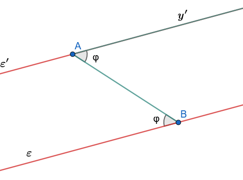
Μεταφέρουμε τη γωνία \(\widehat{\phi}\) έτσι ώστε να έχει κορυφή το \(A\), μία πλευρά την ημιευθεία \(AB\) και η άλλη πλευρά της \(Ay'\) να βρίσκεται στο ημιεπίπεδο που δεν ανήκει η γωνία \(\widehat{\phi}\).
Η ευθεία που ορίζεται από την ημιευθεία \(Ay'\) είναι η ζητούμενη ευθεία \(\epsilon'\).
Απόδειξη:
Επειδή η κατασκευασμένη γωνία \(\widehat{y'AB}\) ισούται με τη \(\widehat{\phi}\) (\(\widehat{y'AB} = \widehat{\phi}\)), οι ευθείες \(\epsilon'\) (δηλαδή η \(Ay'\)) και \(\epsilon\), τεμνόμενες από την ευθεία \(AB\), σχηματίζουν δύο εντός εναλλάξ γωνίες ίσες.
Συνεπώς, σύμφωνα με το κριτήριο παραλληλίας, οι ευθείες είναι παράλληλες (\(\epsilon' \parallel \epsilon\)).
Εφαρμογή 2
Να περιγραφεί η κατασκευή παράλληλης ευθείας από σημείο \(M\) προς ευθεία \(\epsilon\) χρησιμοποιώντας διαδοχικές προεκτάσεις ίσων τμημάτων (Θεώρημα διαμέσου τριγώνου).
Λύση:
Κατασκευή:
Βήματα Κατασκευής της Παράλληλης Ευθείας
Για να χαράξουμε από σημείο \(M\) παράλληλη ευθεία προς τη δοσμένη ευθεία \(\epsilon\), χρησιμοποιούμε μόνο κανόνα και διαβήτη (ή μέτρηση ίσων μηκών) με διαδοχικές προεκτάσεις:
Επιλογή 1ου σημείου \(A\):
Επιλέγουμε ένα τυχαίο σημείο \(A\) πάνω στην ευθεία \(\epsilon\). Ενώνουμε το \(M\) με το \(A\) και προεκτείνουμε το τμήμα \(MA\) κατά ίσο τμήμα: \[AB = MA\] (Δηλαδή, το σημείο \(A\) είναι το μέσο του τμήματος \(MB\)).Επιλογή 2ου σημείου \(\Gamma\):
Επιλέγουμε ένα δεύτερο σημείο \(\Gamma\) πάνω στην ευθεία \(\epsilon\). Ενώνουμε το \(B\) με το \(\Gamma\) και προεκτείνουμε το τμήμα \(B\Gamma\) κατά ίσο τμήμα: \[\Gamma\Delta = B\Gamma\] (Δηλαδή, το σημείο \(\Gamma\) είναι το μέσο του τμήματος \(B\Delta\)).Χάραξη της παράλληλης ευθείας \(\epsilon'\):
Ενώνουμε το σημείο \(M\) με το σημείο \(\Delta\). Η ευθεία \(\epsilon' = M\Delta\) είναι η ζητούμενη παράλληλη προς την \(\epsilon\).
Απόδειξη (Χωρίς χρήση του θεωρήματος των μέσων / θεωρίας παραλλήλων)
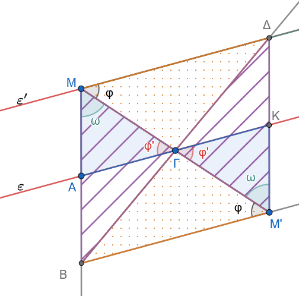
Βήμα 1: Το Παραλληλόγραμμο \(M A M' K\)
Έστω Κ το συμμετρικό του Α ώς προς το Γ.
Από την κατασκευή, οι διαγώνιοι \(MM'\) και \(AK\) διχοτομούνται στο σημείο \(\Gamma\) (\(M\Gamma = \Gamma M'\) και \(A\Gamma = \Gamma K\)).
Άρα το τετράπλευρο \(M A M' K\) είναι παραλληλόγραμμο.
Συνεπώς: \[MA = M'K \quad \text{και} \quad MA \parallel M'K\]
Βήμα 2: Το Παραλληλόγραμμο \(A B M' K\)
- Επειδή το \(A\) είναι το μέσο του \(MB\), ισχύει \(AB = MA\).
- Επειδή \(MA = M'K\), έχουμε: \[AB = M'K\]
- Επειδή τα σημεία \(B, A, M\) βρίσκονται στην ίδια ευθεία και \(MA \parallel M'K\), ισχύει και: \[AB \parallel M'K\]
Ένα τετράπλευρο που έχει δύο απέναντι πλευρές ίσες και παράλληλες (\(AB = M'K\) και \(AB \parallel M'K\)) είναι παραλληλόγραμμο.
Άρα το \(A B M' K\) είναι παραλληλόγραμμο.
Βήμα 3: Ισότητα των γωνιών (\(\phi = \phi'\))
Αφού το \(A B M' K\) είναι παραλληλόγραμμο, οι άλλες δύο απέναντι πλευρές του είναι παράλληλες: \[AK \parallel BM'\]
Θεωρώντας τις παράλληλες ευθείες \(AK\) (δηλαδή την ευθεία \(\epsilon\)) και \(BM'\) με τέμνουσα την \(MM'\), οι εντός εναλλάξ γωνίες είναι ίσες: \[\widehat{A\Gamma M} = \widehat{BM'\Gamma} \implies \phi' = \phi\]
Συμπέρασμα
Από το αρχικό παραλληλόγραμμο \(MBM'\Delta\) είχαμε ήδη \(\widehat{\Delta M \Gamma} = \widehat{B M' \Gamma} = \phi\).
Επομένως: \[\widehat{\Delta M \Gamma} = \widehat{A \Gamma M} = \phi = \phi'\]
Επειδή οι εντός εναλλάξ γωνίες των ευθειών \(M\Delta\) και \(AK\) με τέμνουσα την \(M\Gamma\) είναι ίσες, αποδείχθηκε ότι: \[M\Delta \parallel AK \quad (\epsilon' \parallel \epsilon)\]
Β. Ασκήσεις προς Επίλυση
Σχεδιάστε σχήμα όπου απαιτείται
Άσκηση 6
Εκφώνηση: Από σημείο \(A\) εκτός ευθείας \(\epsilon\), να κατασκευαστεί παράλληλος \(\epsilon' \parallel \epsilon\) χρησιμοποιώντας αποκλειστικά κατασκευή ορθών γωνιών (καθετότητα) και να αποδειχθεί η ορθότητά της.
Κατασκευή:
- Από το σημείο \(A\) φέρουμε την κάθετο \(AB\) προς την ευθεία \(\epsilon\) (\(AB \perp \epsilon\)).
- Στο σημείο \(A\) του ευθυγράμμου τμήματος \(AB\), κατασκευάζουμε την κάθετη ευθεία \(\epsilon'\) προς την \(AB\) (\(\epsilon' \perp AB\) στο \(A\)).
- Η ευθεία \(\epsilon'\) είναι η ζητούμενη παράλληλη.
Απόδειξη:
Λόγω της κατασκευής, οι ευθείες \(\epsilon\) και \(\epsilon'\) είναι και οι δύο κάθετες στο ευθύγραμμο τμήμα \(AB\). Σύμφωνα με το Πόρισμα I των ιδιοτήτων των παραλλήλων ευθειών, δύο ευθείες κάθετες στην ίδια ευθεία είναι μεταξύ τους παράλληλες, άρα: \[\epsilon' \parallel \epsilon \quad\]
Άσκηση 7
Εκφώνηση: Να κατασκευαστεί παραλληλόγραμμο \(AB\Gamma\Delta\) όταν δίνονται οι διαδοχικές πλευρές του \(AB = a\), \(A\Delta = b\) και η περιεχόμενη γωνία \(\widehat{A} = \omega\), χρησιμοποιώντας την κατασκευή παράλληλων ευθειών.
Κατασκευή:
- Κατασκευάζουμε τη γωνία \(\widehat{xAy} = \omega\).
- Πάνω στην ημιευθεία \(Ax\) λαμβάνουμε τμήμα \(AB = a\) και πάνω στην ημιευθεία \(Ay\) λαμβάνουμε τμήμα \(A\Delta = b\).
- Από το σημείο \(B\) κατασκευάζουμε ευθεία παράλληλη προς την \(A\Delta\).
- Από το σημείο \(\Delta\) κατασκευάζουμε ευθεία παράλληλη προς την \(AB\).
- Το σημείο τομής των δύο αυτών παράλληλων ευθειών ορίζει την κορυφή \(\Gamma\).
Απόδειξη:
Από την κατασκευή προκύπτει ότι \(B\Gamma \parallel A\Delta\) και \(\Delta\Gamma \parallel AB\). Εφόσον το τετράπλευρο \(AB\Gamma\Delta\) έχει τις απέναντι πλευρές του παράλληλες ανά δύο, είναι εξ ορισμού παραλληλόγραμμο.
Άσκηση 8
Εκφώνηση: Δίνονται δύο παράλληλες ευθείες \(\epsilon_1 \parallel \epsilon_2\) και σημείο \(A\) εκτός αυτών. Να κατασκευαστεί ευθεία διερχόμενη από το \(A\) η οποία να τέμνει τις δύο παράλληλες ορίζοντας τμήμα μεταξύ τους ίσο με δοσμένο τμήμα \(\lambda\).
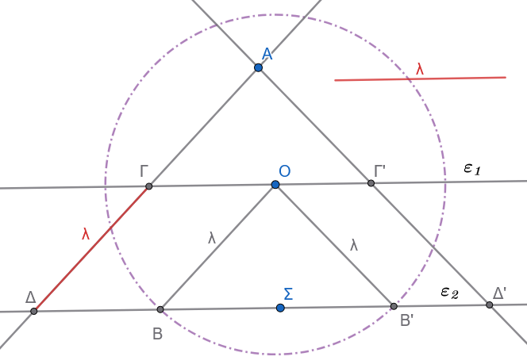
Κατασκευή:
- Θεωρούμε ένα τυχαίο σημείο \(O\) πάνω στην ευθεία \(\epsilon_1\).
- Με κέντρο το \(O\) και ακτίνα ίση με το τμήμα \(\lambda\), γράφουμε κύκλο ο οποίος τέμνει την ευθεία \(\epsilon_2\) στο σημείο \(B\), οπότε \(OB = \lambda\).
- Από το σημείο \(A\) κατασκευάζουμε ευθεία παράλληλη προς την \(OB\).
- Η κατασκευασμένη αυτή ευθεία τέμνει τις \(\epsilon_1\) και \(\epsilon_2\) στα σημεία \(\Gamma\) και \(\Delta\) αντίστοιχα. Το τμήμα \(\Gamma\Delta\) είναι το ζητούμενο.
Απόδειξη:
Στο τετράπλευρο \(O\Gamma\Delta B\):
- \(O\Gamma \parallel B\Delta\) (καθώς ανήκουν στις παράλληλες ευθείες \(\epsilon_1, \epsilon_2\)).
- \(OB \parallel \Gamma\Delta\) (από κατασκευή).
Συνεπώς, το τετράπλευρο \(O\Gamma\Delta B\) είναι παραλληλόγραμμο. Από τις ιδιότητες του παραλληλογράμμου, οι απέναντι πλευρές του είναι ίσες, άρα: \[\Gamma\Delta = OB\]
Επειδή \(OB = \lambda\) λόγω της κατασκευής, προκύπτει ότι \(\Gamma\Delta = \lambda\).
Διερεύνηση
Για να έχει λύση το πρόβλημα πρέπει η απόσταση μεταξύ των παραλλήλων να είναι \(\le λ\).
Άσκηση 9
Εκφώνηση: Από το έγκεντρο \(I\) τριγώνου \(AB\Gamma\) φέρουμε ευθεία παράλληλη προς τη βάση \(B\Gamma\), η οποία τέμνει τις πλευρές \(AB\) και \(A\Gamma\) στα σημεία \(\Delta\) και \(E\) αντίστοιχα. Να αποδείξετε κατασκευαστικά την ιδιότητα: \(\Delta E = B\Delta + \Gamma E\).
Κατασκευή:
- Κατασκευάζουμε τις διχοτόμους των γωνιών \(\widehat{B}\) και \(\widehat{\Gamma}\), οι οποίες τέμνονται στο έγκεντρο \(I\) του τριγώνου.
- Από το σημείο \(I\) κατασκευάζουμε ευθεία παράλληλη προς τη \(B\Gamma\) (χρησιμοποιώντας τη μέθοδο της μεταφοράς γωνίας), η οποία τέμνει τις \(AB, A\Gamma\) στα \(\Delta, E\).
Απόδειξη:
Εφόσον η ευθεία \(\Delta E\) είναι παράλληλη προς τη \(B\Gamma\) (\(\Delta E \parallel B\Gamma\)), η διχοτόμος \(BI\) τέμνει τις παράλληλες αυτές, οπότε οι εντός εναλλάξ γωνίες \(\widehat{BI\Delta}\) και \(\widehat{IB\Gamma}\) είναι ίσες: \[\widehat{BI\Delta} = \widehat{IB\Gamma}\]
Επειδή η \(BI\) είναι διχοτόμος της γωνίας \(\widehat{B}\), ισχύει: \[\widehat{IB\Delta} = \widehat{IB\Gamma} \implies \widehat{IB\Delta} = \widehat{BI\Delta}\]
Το τρίγωνο \(\Delta BI\) είναι ισοσκελές, άρα \(\Delta I = B\Delta\).
Με όμοιο τρόπο, η διχοτόμος \(\Gamma I\) τέμνει τις παράλληλες, άρα οι εντός εναλλάξ γωνίες \(\widehat{\Gamma IE}\) και \(\widehat{I\Gamma B}\) είναι ίσες: \[\widehat{\Gamma IE} = \widehat{I\Gamma B}\]
Επειδή η \(\Gamma I\) είναι διχοτόμος της γωνίας \(\widehat{\Gamma}\), ισχύει: \[\widehat{I\Gamma E} = \widehat{I\Gamma B} \implies \widehat{I\Gamma E} = \widehat{\Gamma IE}\]
Το τρίγωνο \(E\Gamma I\) είναι ισοσκελές, άρα \(IE = \Gamma E\).
Το συνολικό ευθύγραμμο τμήμα \(\Delta E\) ισούται με: \[\Delta E = \Delta I + IE = B\Delta + \Gamma E\]
Άσκηση 10
Εκφώνηση: Δίνεται γωνία \(\widehat{xOy}\) και σημείο \(M\) στο εσωτερικό της. Να κατασκευαστεί ευθεία διερχόμενη από το \(M\) η οποία να τέμνει τις πλευρές \(Ox\) και \(Oy\) στα σημεία \(A\) και \(B\) αντίστοιχα, έτσι ώστε το σημείο \(M\) να είναι το μέσο του ευθυγράμμου τμήματος \(AB\).
Κατασκευή:
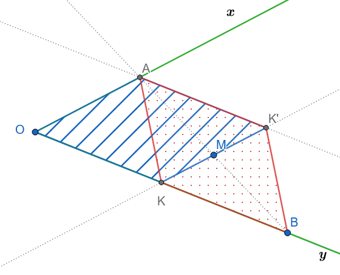
Απόδειξη:
Βήματα Κατασκευής
Εύρεση του σημείου \(K\):
Από το \(M\) φέρνουμε ευθεία παράλληλη προς την \(Ox\) , η οποία τέμνει την πλευρά \(Oy\) στο σημείο \(K\).Εύρεση του σημείου \(K'\):
Προεκτείνουμε το τμήμα \(KM\) κατά ίσο τμήμα \(MK' = KM\) (άρα το \(M\) είναι το μέσο του \(KK'\)).Εύρεση του σημείου \(B\):
Πάνω στην πλευρά \(Oy\), προεκτείνουμε το τμήμα \(OK\) κατά ίσο τμήμα \(KB = OK\) (άρα το \(K\) είναι το μέσο του \(OB\)).Εύρεση του σημείου \(A\):
Από το σημείο \(K'\) φέρνουμε ευθεία παράλληλη προς την \(Oy\), η οποία τέμνει την πλευρά \(Ox\) στο σημείο \(A\).Χάραξη της ζητούμενης ευθείας:
Ενώνουμε το \(A\) με το \(B\). Η ευθεία \(AB\) διέρχεται από το \(M\) και το \(M\) είναι το μέσο του \(AB\).
Απόδειξη (Γιατί η κορυφή \(A\) είναι κοινή και το \(M\) είναι μέσο του \(AB\))
1. Το 1ο Παραλληλόγραμμο \(OAK'K\) (Γραμμοσκιασμένο)
Από την κατασκευή:
Η πλευρά \(OA\) (πάνω στην \(Ox\)) είναι παράλληλη προς την \(KK'\).
Η πλευρά \(OK\) (πάνω στην \(Oy\)) είναι παράλληλη προς την \(AK'\).
Επομένως, το τετράπλευρο \(OAK'K\) είναι παραλληλόγραμμο.
Από τις ιδιότητες του παραλληλογράμμου, οι απέναντι πλευρές είναι ίσες: \[AK' = OK \quad \text{και} \quad AK' \parallel OK \quad (1)\]
2. Το 2ο Παραλληλόγραμμο \(AK'BK\) (Διάστικτο)
Από την κατασκευή έχουμε \(KB = OK\).
Λόγω της σχέσης \((1)\) (\(AK' = OK\)), προκύπτει ότι: \[AK' = KB\]
Επειδή τα σημεία \(O, K, B\) βρίσκονται στην ίδια ευθεία (\(Oy\)) και \(AK' \parallel Oy\), ισχύει: \[AK' \parallel KB\]
Ένα τετράπλευρο που έχει δύο απέναντι πλευρές ίσες και παράλληλες (\(AK' = KB\) και \(AK' \parallel KB\)) είναι παραλληλόγραμμο.
Συνεπώς, το τετράπλευρο \(AK'BK\) είναι παραλληλόγραμμο.
3. Σύνδεση με το σημείο \(M\) και ολοκλήρωση
Στο παραλληλόγραμμο \(AK'BK\):
Οι διαγώνιοί του είναι τα ευθύγραμμα τμήματα \(KK'\) και \(AB\).
Σε κάθε παραλληλόγραμμο, οι διαγώνιοι διχοτομούνται (τέμνονται στο κοινό τους μέσο).
Επειδή από την κατασκευή το σημείο \(M\) είναι το μέσο της διαγωνίου \(KK'\), αναγκαστικά το \(M\) είναι και το μέσο της διαγωνίου \(AB\).
Άρα, η ευθεία \(AB\) διέρχεται από το \(M\) και ισχύει: \[AM = MB\]
1.3 ΜΕΡΟΣ 3: ΓΩΝΙΕΣ ΜΕ ΠΛΕΥΡΕΣ ΠΑΡΑΛΛΗΛΕΣ
Α. Συμπεράσματα
Συμπεράσματα που εξάγουμε από το παρακάτω σχήμα.
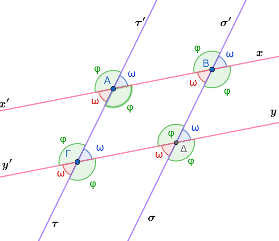
- Συμπέρασμα I: Δύο οξείες γωνίες που έχουν τις πλευρές τους παράλληλες μία προς μία είναι ίσες μεταξύ τους.
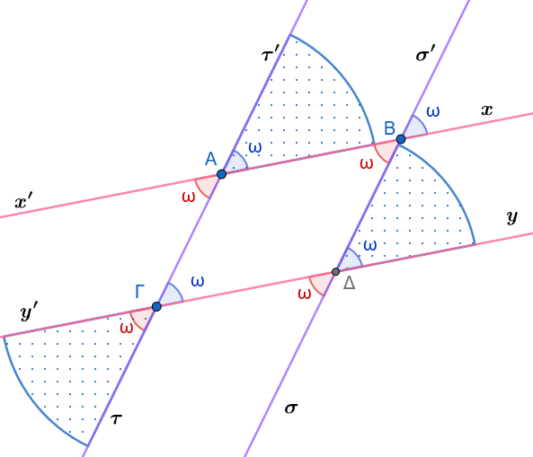
- Συμπέρασμα II: Δύο αμβλείες γωνίες που έχουν τις πλευρές τους παράλληλες μία προς μία είναι ίσες μεταξύ τους.
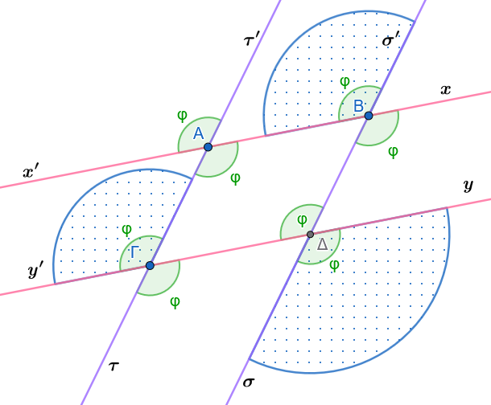
- Συμπέρασμα III: Αν δύο γωνίες έχουν τις πλευρές τους παράλληλες μία προς μία, και η μία είναι οξεία ενώ η άλλη αμβλεία, τότε οι γωνίες αυτές είναι παραπληρωματικές.
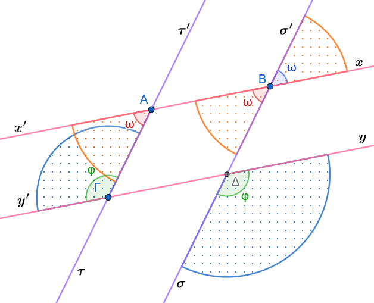
Β. Πορίσματα
Πόρισμα I:
Οι διχοτόμοι δύο γωνιών που έχουν τις πλευρές τους παράλληλες και ομόρροπες, είναι παράλληλες ημιευθείες.
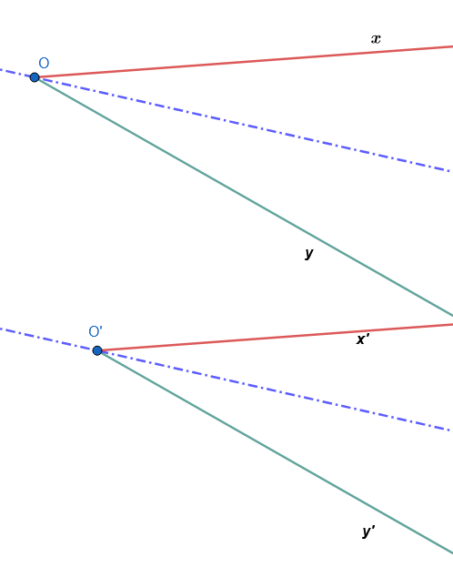
Πόρισμα II:
Οι διχοτόμοι δύο γωνιών που έχουν τις πλευρές τους παράλληλες και αντίρροπες, είναι κάθετες ευθείες στην περίπτωση που η μία γωνία είναι οξεία και η άλλη αμβλεία.
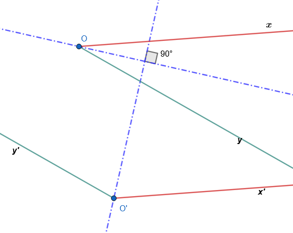
Γ. Εφαρμογές (Λυμένα Παραδείγματα)
Εφαρμογή 1
Αν δύο γωνίες \(\widehat{xOy}\) και \(\widehat{x'\Omega y'}\) έχουν πλευρές \(Ox \parallel \Omega x'\) (ομόρροπες) και \(Oy \parallel \Omega y'\) (ομόρροπες), να αποδειχθεί αναλυτικά ότι είναι ίσες.
Λύση:
Έστω \(M\) το σημείο τομής των ευθειών \(\Omega x'\) και \(Oy\).
- Οι γωνίες \(\widehat{xOy}\) και \(\widehat{OM\Omega}\) είναι ίσες ως εντός εναλλάξ των παράλληλων ευθειών \(Ox\) και \(\Omega x'\) που τέμνονται από την \(Oy\): \[\widehat{xOy} = \widehat{OM\Omega} \quad\]
- Οι γωνίες \(\widehat{x'\Omega y'}\) (δηλαδή η \(\widehat{M\Omega y'}\)) και \(\widehat{OM\Omega}\) είναι ίσες ως εντός εναλλάξ των παράλληλων ευθειών \(Oy\) και \(\Omega y'\) που τέμνονται από την \(\Omega x'\). \[\widehat{x'\Omega y'} = \widehat{OM\Omega}\]
Από τη μεταβατική ιδιότητα των δύο αυτών σχέσεων προκύπτει άμεσα ότι: \[\widehat{xOy} = \widehat{x'\Omega y'} \quad\]
Εφαρμογή 2
Αν δύο γωνίες \(\widehat{xOy}\) και \(\widehat{x''\Omega y''}\) έχουν τις πλευρές τους παράλληλες, η μία είναι οξεία και η άλλη αμβλεία, να αποδειχθεί ότι είναι παραπληρωματικές.
Λύση:
Έστω η γωνία \(\widehat{xOy}\) (οξεία) και η γωνία \(\widehat{x''\Omega y''}\) (αμβλεία).
Σχεδιάζουμε τη γωνία \(\widehat{x'\Omega y'}\), η οποία έχει τις πλευρές της παράλληλες και ομόρροπες προς τις πλευρές της γωνίας \(\widehat{xOy}\).
Τότε, από το θεώρημα των ομόρροπων γωνιών, ισχύει: \[\widehat{x'\Omega y'} = \widehat{xOy}\]
Η γωνία \(\widehat{x'\Omega y'}\) είναι οξεία. Η γωνία \(\widehat{x''\Omega y''}\) έχει την πλευρά \(\Omega x''\) αντίρροπη της \(\Omega x'\) και την πλευρά \(\Omega y''\) αντίρροπη της \(\Omega y'\).
Συνεπώς, οι γωνίες \(\widehat{x'\Omega y'}\) και \(\widehat{x''\Omega y''}\) είναι εφεξής και παραπληρωματικές: \[\widehat{x'\Omega y'} + \widehat{x''\Omega y''} = 180^\circ \quad\]
Αντικαθιστώντας την ισότητα των γωνιών, λαμβάνουμε άμεσα: \[\widehat{xOy} + \widehat{x''\Omega y''} = 180^\circ \quad\]
Δ. Ασκήσεις προς Επίλυση
Σχεδιάστε σχήμα όπου απαιτείται
Άσκηση 11
Εκφώνηση: Δύο γωνίες έχουν τις πλευρές τους παράλληλες μία προς μία. Αν η μία γωνία είναι τριπλάσια της άλλης, να υπολογίσετε το μέτρο της κάθε γωνίας σε μοίρες.
Λύση:
Έστω \(\widehat{\alpha}\) και \(\widehat{\beta}\) οι δύο γωνίες με πλευρές παράλληλες. Από τη θεωρία γνωρίζουμε ότι οι γωνίες αυτές είναι είτε ίσες είτε παραπληρωματικές.
Αν ήταν ίσες (\(\widehat{\alpha} = \widehat{\beta}\)), αυτό θα ερχόταν σε αντίθεση με την υπόθεση ότι η μία είναι τριπλάσια της άλλης (\(\widehat{\alpha} = 3\widehat{\beta}\)).
Συνεπώς, οι γωνίες είναι υποχρεωτικά παραπληρωματικές, άρα: \[\widehat{\alpha} + \widehat{\beta} = 180^\circ\] Αντικαθιστούμε τη σχέση \(\widehat{\alpha} = 3\widehat{\beta}\): \[3\widehat{\beta} + \widehat{\beta} = 180^\circ \implies 4\widehat{\beta} = 180^\circ \implies \widehat{\beta} = 45^\circ\]
Υπολογίζουμε την άλλη γωνία: \[\widehat{\alpha} = 3 \cdot 45^\circ = 135^\circ\]
Άρα, οι γωνίες είναι \(45^\circ\) (οξεία) και \(135^\circ\) (αμβλεία).
Άσκηση 12
Εκφώνηση: Δίνονται δύο γωνίες με πλευρές παράλληλες και ομόρροπες. Να αποδείξετε ότι οι διχοτόμοι τους είναι παράλληλες ημιευθείες.
Απόδειξη:
Έστω οι γωνίες \(\widehat{xOy}\) και \(\widehat{x'\Omega y'}\) με \(Ox \parallel \Omega x'\) (ομόρροπες) και \(Oy \parallel \Omega y'\) (ομόρροπες). Φέρουμε τις αντίστοιχες διχοτόμους τους \(O\zeta\) και \(\Omega\zeta'\).
Εφόσον οι γωνίες έχουν τις πλευρές τους παράλληλες και ομόρροπες, είναι ίσες: \[\widehat{xOy} = \widehat{x'\Omega y'} = 2\omega\]
Οι διχοτόμοι χωρίζουν τις γωνίες αυτές σε δύο ίσα μέρη, οπότε: \[\widehat{xO\zeta} = \widehat{x'\Omega\zeta'} = \omega \quad\]
Θεωρούμε την ευθεία \(O\Omega\) η οποία τέμνει τις παράλληλες ημιευθείες \(Ox\) και \(\Omega x'\). Οι αντίστοιχες γωνίες που σχηματίζονται με τις διχοτόμους \(O\zeta\) και \(\Omega\zeta'\) είναι ίσες με \(\omega\).
Επειδή οι ημιευθείες \(O\zeta\) και \(\Omega\zeta'\) σχηματίζουν ίσες γωνίες με τις παράλληλες πλευρές, σύμφωνα με το κριτήριο παραλληλίας, είναι παράλληλες ημιευθείες: \[O\zeta \parallel \Omega\zeta' \quad\]
Άσκηση 13
Εκφώνηση: Δίνονται δύο γωνίες με πλευρές παράλληλες, εκ των οποίων η μία είναι οξεία και η άλλη αμβλεία. Να αποδείξετε ότι οι διχοτόμοι τους είναι κάθετες ευθείες.
Απόδειξη:
Έστω η οξεία γωνία \(\widehat{xOy} = 2\alpha\) και η αμβλεία γωνία \(\widehat{x'\Omega y'} = 2\beta\). Εφόσον οι γωνίες έχουν πλευρές παράλληλες και είναι διαφορετικού είδους, είναι παραπληρωματικές: \[2\alpha + 2\beta = 180^\circ \implies \alpha + \beta = 90^\circ\]
Έστω \(O\zeta\) η διχοτόμος της πρώτης γωνίας και \(\Omega\zeta'\) η διχοτόμος της δεύτερης γωνίας.
Σχεδιάζουμε τη βοηθητική γωνία \(\widehat{x'\Omega y''}\), η οποία είναι παραπληρωματική της \(\widehat{x'\Omega y'}\) και έχει τις πλευρές της παράλληλες και ομόρροπες προς την \(\widehat{xOy}\).
Οι διχοτόμοι δύο εφεξής και παραπληρωματικών γωνιών είναι κάθετες μεταξύ τους: \[\Omega\zeta' \perp \Omega\zeta''\]
Επειδή η διχοτόμος \(O\zeta\) είναι παράλληλη προς τη διχοτόμο \(\Omega\zeta''\) (λόγω ομόρροπων πλευρών), και η \(\Omega\zeta'\) είναι κάθετη στην \(\Omega\zeta''\), προκύπτει άμεσα ότι η διχοτόμος \(O\zeta\) είναι κάθετη στη διχοτόμο \(\Omega\zeta'\): \[O\zeta \perp \Omega\zeta' \quad\]
Άσκηση 14
Εκφώνηση: Σε παραλληλόγραμμο \(AB\Gamma\Delta\), να αποδείξετε με τη χρήση του θεωρήματος γωνιών με πλευρές παράλληλες ότι οι απέναντι γωνίες \(\widehat{A}\) και \(\widehat{\Gamma}\) είναι ίσες.
Απόδειξη:
Από τον ορισμό του παραλληλογράμμου \(AB\Gamma\Delta\), οι απέναντι πλευρές του είναι παράλληλες ανά δύο: \[AB \parallel \Gamma\Delta \quad \text{και} \quad A\Delta \parallel B\Gamma\]
Θεωρούμε τη γωνία \(\widehat{A}\) (που σχηματίζεται από τις πλευρές \(AB\) και \(A\Delta\)) και τη γωνία \(\widehat{\Gamma}\) (που σχηματίζεται από τις πλευρές \(\Gamma B\) και \(\Gamma\Delta\)).
- Η πλευρά \(AB\) είναι παράλληλη προς την \(\Gamma\Delta\).
- Η πλευρά \(A\Delta\) είναι παράλληλη προς την \(B\Gamma\).
Οι δύο γωνίες έχουν τις πλευρές τους παράλληλες μία προς μία. Επιπλέον, οι πλευρές τους είναι αντίρροπες (η \(AB\) και η \(\Gamma\Delta\) έχουν αντίθετη φορά, όπως και η \(A\Delta\) με τη \(B\Gamma\)).
Επειδή οι γωνίες έχουν πλευρές παράλληλες και αντίρροπες, είναι ίσες: \[\widehat{A} = \widehat{\Gamma} \quad\]
Άσκηση 15
Εκφώνηση: Δίνονται δύο γωνίες \(\widehat{\omega}\) και \(\widehat{\phi}\) με πλευρές παράλληλες μία προς μία. Αν ισχύει \(\widehat{\omega} = 120^\circ - \theta\) και \(\widehat{\phi} = 60^\circ + \theta\), να αποδείξετε ότι οι γωνίες αυτές είναι παραπληρωματικές.
Απόδειξη:
Προσθέτουμε τα μέτρα των δύο γωνιών: \[\widehat{\omega} + \widehat{\phi} = (120^\circ - \theta) + (60^\circ + \theta) = 120^\circ + 60^\circ - \theta + \theta = 180^\circ\]
Επειδή το άθροισμα των γωνιών είναι σταθερό και ίσο με \(180^\circ\), οι γωνίες \(\widehat{\omega}\) και \(\widehat{\phi}\) είναι παραπληρωματικές.
Σύμφωνα με τη θεωρία των γωνιών με παράλληλες πλευρές, αυτό συμβαίνει όταν η μία γωνία είναι οξεία και η άλλη αμβλεία, επιβεβαιώνοντας τη γεωμετρική τους σχέση.
ΚΑΛΗ ΜΕΛΕΤΗ !!!